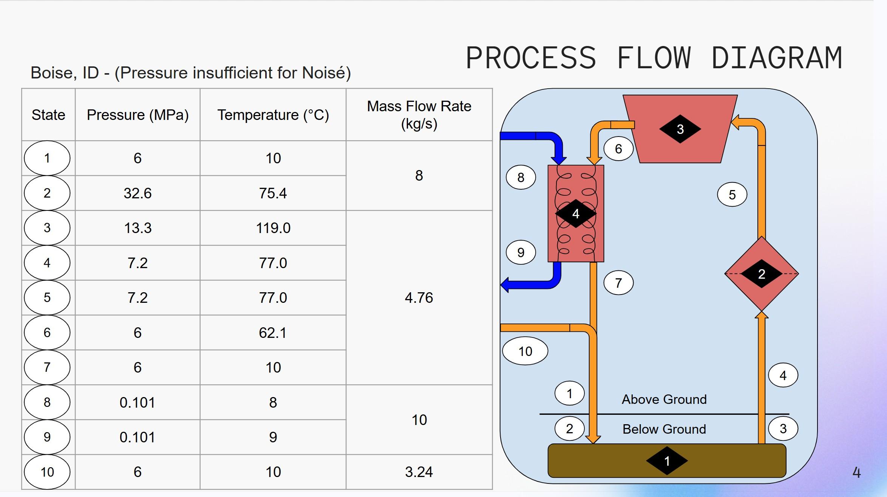

About Me
I am a mechanical engineering student with interests in 3D Design, Systems and Controls, Heat Transfer, Computational Engineering, and Robotics.
Download Resume

Projects

Geothermal Seqeustration Simulation
Modeled and optimized a thermodynamic cycle for geothermal sequestration using Python and Sheets.
View Project
Ultrasonic Speaker Motion Design
Designed a working prototype for a facial-tracking ultrasonic speaker, including a housing, frame, and motor positioning.
View Project
Color-Sensing Marble Sorter
Designed vertical color-based marble sorter. Used 3D design to CAD, print, assemble, and test the working final versionof the sorter.
View ProjectSkills
- MATLAB
- Python
- SolidWorks (CSWA)
- Woodshop/Metalshop
- GD&T
- Technical Communication
- Public Speaking
- Chinese Language
- Spanish Language
Contact
Email: elijah.x.wong@gmail.com
GitHub: github.com/EliXWong
LinkedIn: linkedin.com/in/elijah-wong-1081b3172/